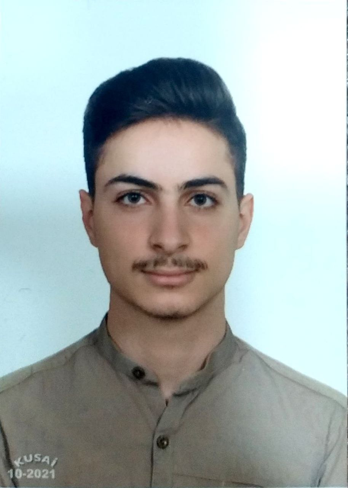

Hadiar Abu Zarra

Summary
Information Engineering student with a focus on IT management, seeking to
leverage academic knowledge and practical skills in a dynamic environment.
Proven ability to collaborate within teams and manage projects
efficiently. Passionate about utilizing technology to enhance operational
efficiency and improve guest experiences. Eager to contribute innovative
solutions and strategic planning to support IT objectives.
Education
-
Bachelor of Science in Information Engineering - University of Aleppo
Work Experience
- Freelance Graphic Designer
2021 - Present
-
Delivered creative design solutions for a diverse range of clients,
enhancing brand identity and visual communication.
-
Developed marketing materials, including brochures and social media
graphics, resulting in an increase in client engagement
-
Collaborated with clients to understand their vision, providing
tailored designs that met specific project goals and deadlines.
-
Utilized industry-standard software to produce high-quality graphics,
ensuring timely delivery and client satisfaction.
Technical Skills
- Information Systems Management
- Graphic Design and Visual Communication
- Project Management
- Team Collaboration and Planning
- Software Proficiency
Certifications
- Public relations management
- Human resources management
Other
© Haidar Abu Zarra. All rights reserved.